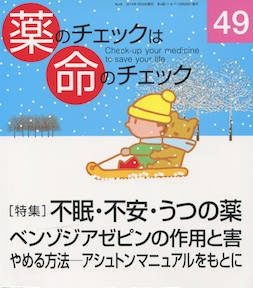

No.49 [特集] 不眠・不安・うつの薬 ベンゾジアゼピンの作用と害 2013年1月 発行
駅前交番の近くでタクシードライバーを脅かした。
人が見ている前で放火した。
夫の首を絞めて殺した。
自分の母親を射殺した。
信じられないような話、衝撃的な事件が日本でも海外でも、
現実にある、のです。
まるで覚せい剤中毒者が引き起こすような状況があります。
そして、日本では年間自殺者数3万人台が続いています。
―これらの出来事の背景に、睡眠剤・抗うつ剤などがあります。
ただし、絶対に勝手に中止しないでください。
必ず医師と相談のうえ、徐々に減量してから中止を。
（絶版）
もくじ
Main Feature 特集 不眠・不安・うつの薬
■ 特集を読む、その前に… 編集部
■ 少し不眠くらいが長生き 浜 六郎
《特別インタビュー》
■ 薬漬けの日々のあとに
害反応は、強盗致傷犯になることだった
■ コラム：精神医療費通院公費負担制度について
■ マイスリーでは眠れない？ 中西剛明
■ 睡眠剤・抗不安剤の作用と害 浜 六郎
■ 薬剤が必要な不眠・不安はある？
■ 向精神薬による被害 谷田憲俊
東日本大震災被災者支援の経験から
■ やめるほうがよっぽどたいへん 本沢龍生
家庭医の立場で思うこと
■ 睡眠剤・安定剤を辞める方法 浜 六郎／編集部
アシュトンマニュアルを参考に
■ ベンゾジアゼピン剤等価換算表
《新・市民の視点》
■ くすりは最小限にという患者の願い 春本幸子
■ コラム：ハルシオン・スキャンダル
Series 連載
■ 医師国家試験に挑戦しよう！⑮ 木元康介
■ コーヒー無礼区 坂口啓子
■ リレーエッセイ 落語の世界 桂そうば
■ みんなのやさしい生命倫理(49) 生老病死⑲ 谷田憲俊
■ 医師国家試験の解答と解説
Others
■ 質問箱①海外出張・駐在に肝炎ワクチン必要？
②番外編：薬剤評価の読み方
■ 読者の声
■ 書評
■ バックナンバー一覧 / 書籍申込用紙
■ 編集後記/奥付
（絶版）